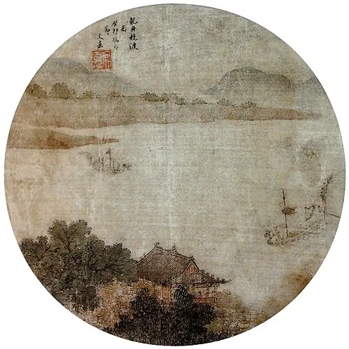

太守行纪
第一季第 01 集响水水稻种植技艺黑龙江 · 宁安2026

最新一集 · 筹备中，尚未开拍
01
响水水稻种植技艺
- 地区
- 黑龙江宁安
- 名录
- 黑龙江省级，2009
- 状态
- 筹备中
节目筹备中读文字版 →
本季目录
第一季 · 2026
本集传承人
第 01 集
寻访编号No.001
响水水稻种植技艺
关于
太守寻非遗
实地寻访非物质文化遗产传承人。所有讲述经本人确认后发布。
关于 →最新一集 · 筹备中，尚未开拍
01
第一季 · 2026
第 01 集
寻访编号No.001
响水水稻种植技艺太守寻非遗
实地寻访非物质文化遗产传承人。所有讲述经本人确认后发布。
关于 →国家级非物质文化遗产代表性项目 1557 项，数据来自中国非物质文化遗产网 · 查名录 →



配图均为公有领域或 CC0 授权，作者和出处见名录页每一项。